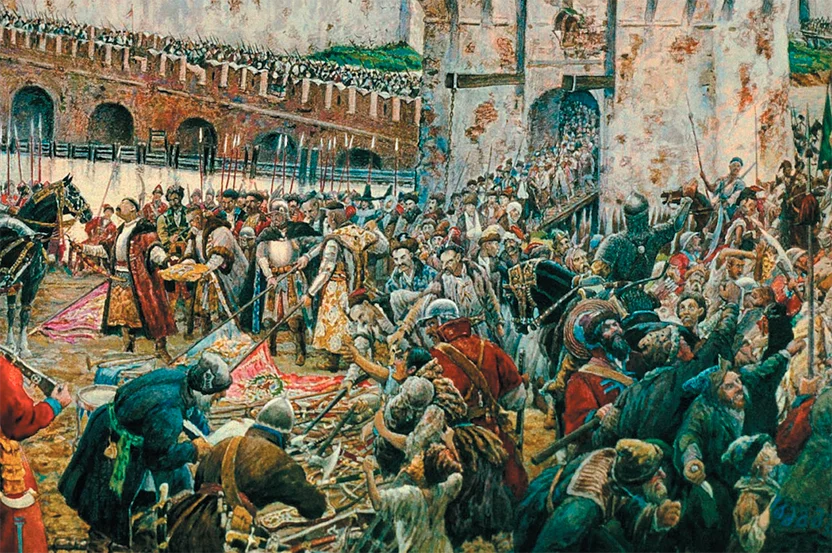
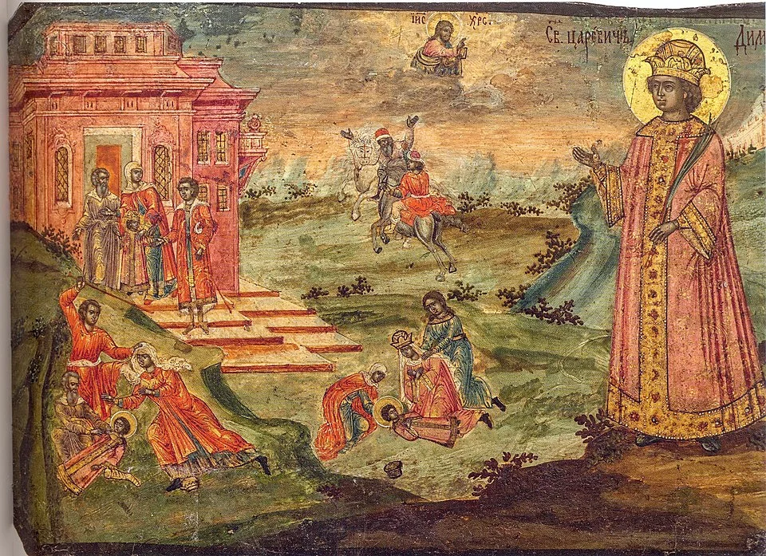
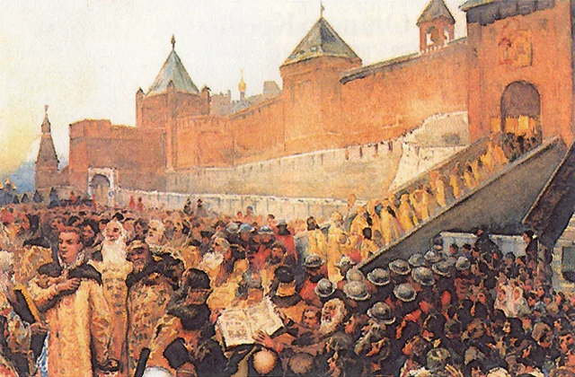
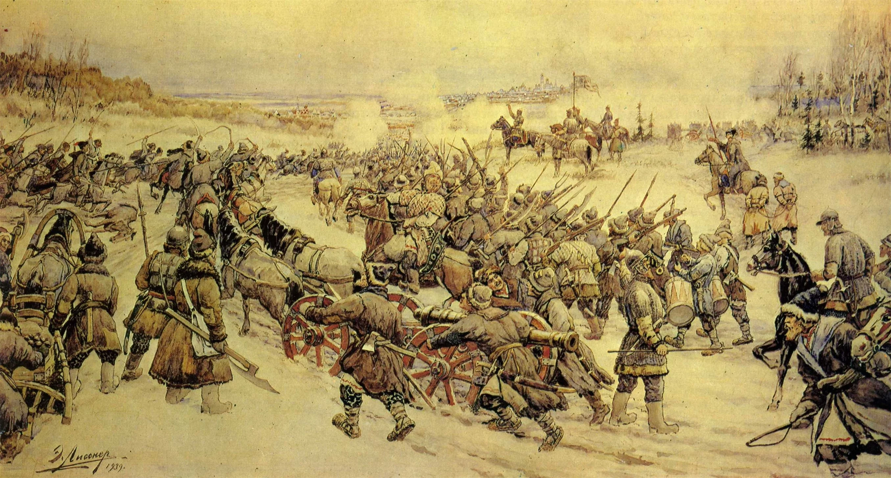
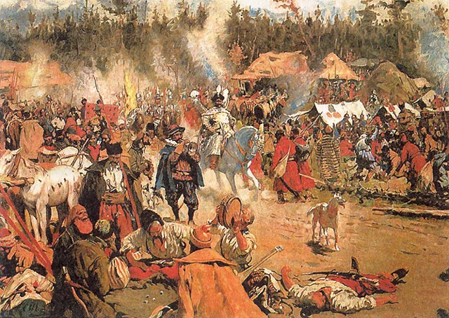
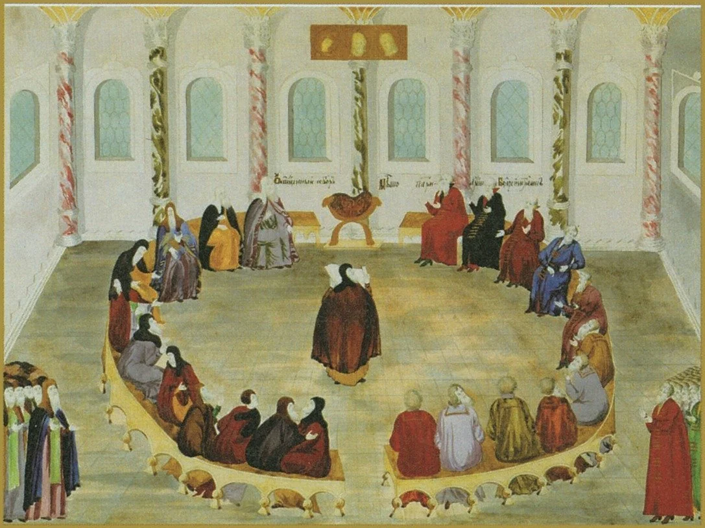

Смутное время
Смутное время - это период в истории России конца XVI – начала XVII века, характеризующийся системным кризисом государственности, вызванным пресечением династии Рюриковичей.
Хронология
Ключевые события по годам
- 1598: Прекращение династии Рюриковичей со смертью царя Фёдора Ивановича. Борис Годунов избран царем.
- 1601–1603: Катастрофический голод в России, усугубивший социальный кризис.
- 1603: Восстание под предводительством Хлопка Косолапа.
- 1604: Начало похода Лжедмитрия I на Москву.
- 1605:
-
- Восстание под предводительством Хлопка Косолапа.
- Начало похода Лжедмитрия I на Москву.
- 1606:
-
- Восстание против Лжедмитрия I под руководством Василия Шуйского.
- Избрание Василия Шуйского царем.
- 1606–1607: Восстание Ивана Болотникова.
- 1609: Начало открытого вторжения польско-литовских войск под командованием Сигизмунда III.
- 1611: Создание Первого ополчения под руководством Прокопия Ляпунова.
- 1612: Освобождение Москвы от польских интервентов Вторым ополчением под предводительством Минина и Пожарского.
- 1613: Земский собор избирает царем Михаила Романова, что знаменует конец Смутного времени.
История
Начало Смутного времени
Смутное время началось после того, как не осталось Рюриковичей — прямых наследников трона. Здесь можно выделить три ключевых периода.
1598 год. Умирает Федор Иванович – последний из Рюриковичей. В том же году Земский собор избирает Бориса Годунова. И это сразу же вызывает протесты в обществе, поскольку он не является представителем царского рода. Это считается нарушением святой традиции. Не в пользу нового правителя и жесткая политика самого Годунова: он ущемляет права бояр и не жалеет политических противников.
1601-1603 годы. Наступает голод, виной которому неурожай, вызванный климатическими изменениями. Однако многие воспринимают его как «божью кару» за не-Рюриковича на троне и плохое расследование церковью гибели Дмитрия Ивановича — внука Ивана IV. Из-за голода многие умирают, что вызывает социальные возмущения. Тысячи бездомных холопов сбиваются в разбойничьи шайки под Москвой.
1603 год. Восстание Хлопка – крупное восстание холопов и крепостных крестьян, которое было возглавлено атаманом и разбойником Хлопком Косолапым. Восстание охватило значительную часть центральной России, а основные силы бунтовщиков были сосредоточены в окрестностях Москвы. В столь критической ситуации царь Борис Годунов поручил своему самому талантливому воеводе и окольничему Ивану Федоровичу Басманову. Ему был даны все имеющиеся в столице стрелецкие отряды и полная свобода действий при разгроме отрядов Хлопка Косолапого. Основное сражение состоялось в сентябре 1603 г. и сначала восставшим удалось застать отряд И.Ф. Басманова врасплох и окружить его. В этот момент и проявился в полной мере полководческий талант И.Ф. Басманова, который смог скоординировать свои силы и успешно прорваться из окружения. В этот момент завязался ожесточённый бой с восставшими и к концу дня стрелецкие отряды смогли тяжело ранить Хлопка Косолапого, внеся суматоху в ряды восставших. С этого момента восставшие крестьяне стали в панике отступать и разбегаться в разные стороны.
Основные факты и события периода Смутного времени
Основные события Смутного времени начались после значительного ослабления власти Бориса Годунова и появления Лжедмитрия I. Эти два фактора буквально раскололи общество. Поговорим о каждом периоде детальнее.
1604 год. Появление Лжедмитрия I. Беглый монах Григорий Отрепьев под покровительством польского короля Сигизмунда III вторгается в пределы России. Имея деньги и частную армию, он объявляет себя выжившим внуком Ивана IV Грозного. В поддержку Лжедмитрия I выступает сандомирский воевода Юрий Мнишек. Самозванец набирает популярность в обществе. Крестьяне вступают в отряды в поддержку Лжедмитрия I, юг и юго-запад России охватывают народные движения.
1605 год. Разгром Лжедмитрия I и его возвращение. Царские воеводы Петр Басманов и Василий Голицын собирают войско и громят силы самозванца под Добрыничами. Тот убегает в Путивль, решая сменить тактику. В том же году умирает Борис Годунов. К власти приходит Федор Борисович, не пользующийся поддержкой. Ситуацией воспользовался Лжедмитрий I. Он снова собирает войско и идет на Москву. Поход оказывается успешным. Династия Годуновых завершает царствование, а сам Лжедмитрий I женится на Марине Мнишек.
1606 год. Убийство Лжедмитрия I. Бояре и знать недовольны новым царем. Одновременно полыхает религиозный конфликт, так как Лжедмитрий I католик. Гнев народа растет. Боярин Василий Шуйский организует восстание и убивает царя. Спустя несколько дней он сам занимает трон.
1606-1607 годы. Царствование Василия IV Шуйского. Новый царь начинает править. Но результатом становится деградация центральной власти. Окраины вовсе отказываются признавать нового правителя. Вспыхивает восстание Ивана Болотникова. Основные центры борьбы — Путивль и Москва. Восстание удается подавить, но страна остается ослаблена. Шуйский принимает непопулярный указ об установлении 15-летнего сыска беглых крестьян. Реализовать его не удается из-за недееспособности власти. Политический кризис усиливается.
1607-1610 годы. Обострение внешнеполитической ситуации и появление Лжедмитрия II. Польша продолжает вмешиваться в дела России. Объявляется якобы чудом спасшийся «внук» Ивана IV. В это время Речь Посполитая объявляет России войну. Смоленск оказывается в 20-месячной осаде.
1610 год. Свержение Василия IV Шуйского. Репутация царя страдает из-за ряда военных и политических неудач. Вспыхивают бунты, бояре недовольны — итогом становится свержение правителя. Создается временное правление — Семибоярщина. К Москве подходят войска Лжедмитрия II. Московские бояре присягают польскому царю.
1610 – начало 1611 года. Семибоярщина. К власти приходят семь самых влиятельных бояр. Начинается польская интервенция. Москва пала в бою и была значительно сожжена. Лжедмитрий II погибает. Швеция захватывает Великий Новгород. Формируются ополчения и восстания.
Середина 1611 года. Шведская интервенция. Шведские войска захватывают Великий Новгород, северо-запад России оказывается под оккупацией. Общество недовольно собственной властью из-за неспособности защитить государство. Вспыхивают народные восстания. Растет патриотизм и национальное самосознание.
Окончание Смутного времени
Первые предпосылки к окончанию Смутного времени наметились в конце 1612 года. Тогда российское общество пришло к мысли, что польских интервентов необходимо изгнать из Москвы. Удачный поход на столицу несколько стабилизировал ситуацию и заставил осознать главное — стране нужен правитель.
Конец 1612 года. Освобождение Москвы. Под предводительством Кузьмы Минина и Дмитрия Пожарского формируется ополчение. Войска двигаются в столицу. В результате битвы столица освобождается. Тогда же остро встает вопрос об избрании нового правителя и восстановлении государственности.
Январь 1613 года. Земский собор. На нем 16-летний Михаил Федорович Романов избирается новым царем. Его выбирают из-за родственных связей с Рюриковичами (двоюродный племянник Федора I Ивановича) и неучастии в Смуте. Кроме того, многие возлагают на него надежды по причине юного возраста. Поляки пытаются погубить нового правителя, однако терпят крах. Отношения с Польшей и Швецией ухудшаются. В то же время российская государственность укрепляется.
Галерея
Убийство царевича Дмитрия
Вступление Лжедмитрия I в Москву
Войско Болотникова под Москвой
Тушинский лагерь
Избрание на царство Михаила Романова